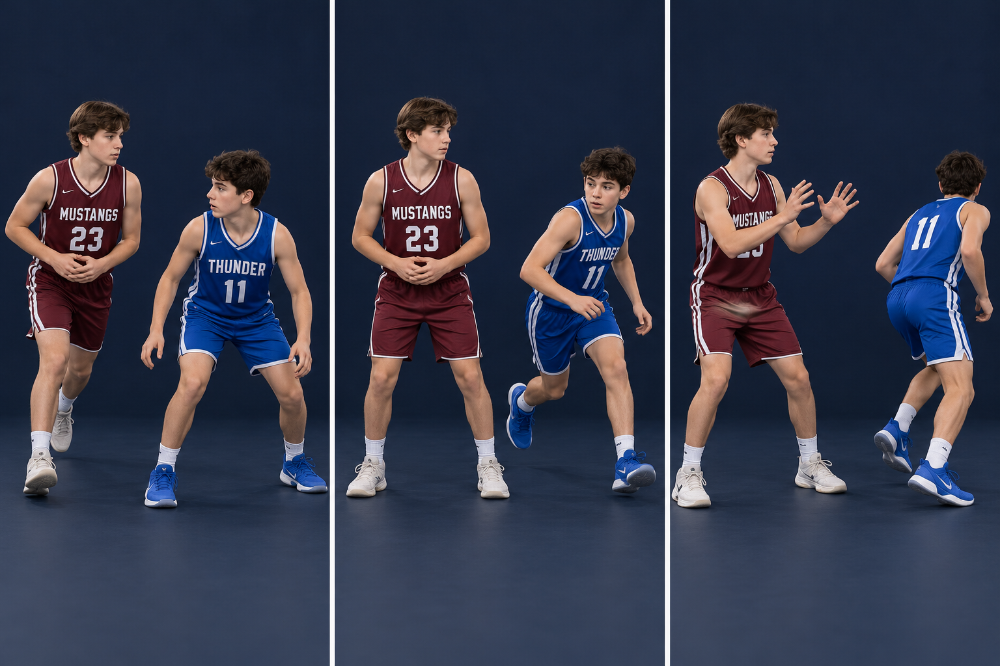

A screen helps a teammate find space. It is not a collision to win. Your teammate waits for the screen, uses the available shoulder, and reads how the defender goes around it.
PHOTO WALKTHROUGH
Clear stills · one action at a time
3 photo steps

01
Step 1 · Find the angle early
STEP 01
Find the angle early
Get to open space before contact.
Choose the angle that puts your stationary body in the defender’s route. Arrive early enough to stop.
Give a moving defender time and distance to avoid the screen. A blind screen on a stationary defender needs room for a normal backward step.
Catch this mistake
Running into the defender or setting a last-second screen directly in a moving player’s path.
02
Step 2 · Be a still target
STEP 02
Be a still target
Feet set. Elbows in. No lean.
Use a stable, comfortable stance with arms close to the body. Hold your position through the cutter’s use of the screen.
Do not widen a leg, turn a hip into contact, shove with a shoulder, or grab the defender. Let the defender go around.
Catch this mistake
Following the defender with a moving screen or reaching out to make the screen bigger.
03
Step 3 · Release after the action clears
STEP 03
Release after the action clears
Now turn and show your hands.
After the cutter and defender clear the screen, turn into the next useful space and show a target.
Roll, pop, or fill as the play calls. A planned slip is a separate read made before contact; never turn into a defender to manufacture contact.
Catch this mistake
Rolling before your teammate can use the screen or standing still after the action has finished.
AI-created photo illustrations for teaching body positions. These are separate stills, not slow-motion game footage. Use the written cues and diagrams for movement direction and rules.
Cutter waits until S is set, then uses the available shoulder. S holds through the action and releases afterward. Spacing is schematic.
GET THERE → GET SET → WAIT → RELEASE
KEEP IT LEGAL
Know the boundary
A legal contact screen needs stationary legal position, arms close, and the required time and distance. A moving defender must be able to avoid it. Do not use the photo spacing as a rules measurement.
TRY IT AT PRACTICE
Start slow, then add a read
Three players: screener, cutter, passive defender. Walk through arrive–set–wait–cut–release. Coach freezes the action at the screen and checks feet, arms, and space. Add reads before adding speed.
Ask yourself
Was I set before contact, and did my teammate actually have time to use me?
Coaching references & teaching notes
These are team teaching adaptations. Sources support the principles; the AI-created illustrations are not official rules diagrams or endorsements. Check your event’s local rules with the coach.